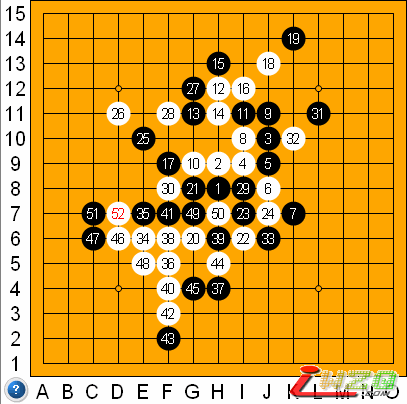

疏星(lingflysun vs zjrenju73)自战解说
#1 疏星(lingflysun vs zjrenju73)自战解说 作者：有志青年 发表时间：2007-4-5 14:22:23
这盘棋20手以后的变化可能都有人做出终结谱了吧，此局可供参考

疏星(lingflysun vs zjrenju73)
白20之前的变化已成定式。
以往白20一般是应于22位，后来发现G6的变化更具攻击性，并且似乎已经是必胜了（本人信息闭塞，手中尚无终结谱，还不敢下断言，有知道的朋友请告知，谢谢），这两点都在6线上，只不过一个偏左一个偏右，一个作了个大跳二一个做了个大跳眠三，效果就会如此不同？粗略分析如下，G6偏左，则黑棋的主要强防也会集中在左方，同样I6偏右那么黑防点会和右方的黑棋形成一定的联系，由于左右黑棋棋形的差异，导致偏右的I6点白20会使黑棋在后面的防守中总是能利用右方黑棋棋形形成一定的反击借用，使得白棋在后面的攻击中丢掉连续先手而不得不走一步相对的缓手则黑棋将赢得喘息之机。（由于本人的孤陋寡闻及水平和研究有限，也可能已经有人也做出了白20于I6点的终结谱。）
黑21后白22是要点，因为已经有G6位20了，于是22走I6就不再有20单走I6的弊端了。
白此后的攻击就比较顺畅了。
#2 Re:疏星(lingflysun vs zjrenju73)自战解说 作者：五子天下 发表时间：2008-2-13 16:08:36
哎~~~ 本人棋力尚浅 等我厉害了再来说吧